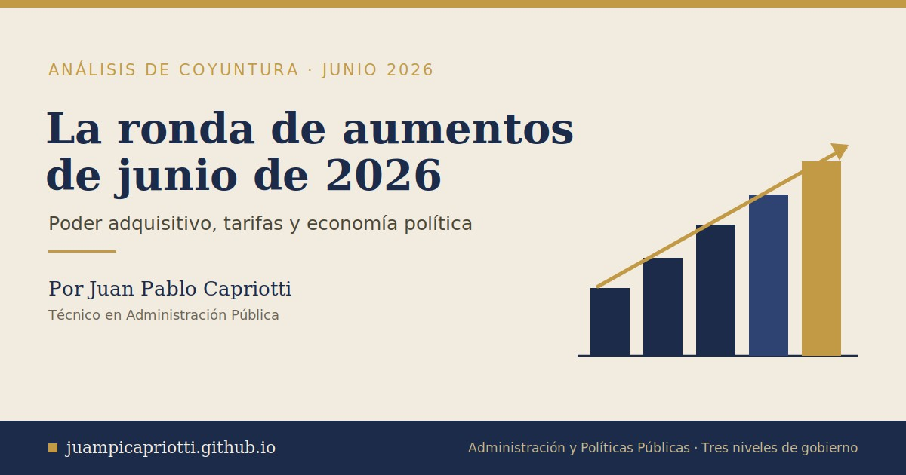

Ajuste tarifario, poder adquisitivo y economía política: la ronda de aumentos de junio de 2026
Cómo impactan las subas de servicios, transporte, salud y vivienda sobre el poder adquisitivo de los hogares, y en qué consiste el nuevo régimen de subsidios energéticos focalizados.

Resumen
El inicio de junio de 2026 trajo en la Argentina una nueva ronda de incrementos simultáneos en servicios regulados y en bienes y servicios de consumo básico: tarifas de energía eléctrica, gas natural y agua potable, transporte público, medicina prepaga, alquileres residenciales, educación privada y peajes, con un ajuste de combustibles aún latente. Este trabajo analiza la dinámica de esos aumentos en un contexto de desaceleración inflacionaria —la variación del IPC de abril fue del 2,6%, el registro mensual más bajo en cinco meses— y examina su impacto diferencial sobre el poder adquisitivo de los hogares. Asimismo, se discuten las implicancias de economía política del proceso de recomposición tarifaria y se describe en detalle el Régimen de Subsidios Energéticos Focalizados (SEF), su lógica de focalización, los criterios de acceso y el procedimiento de inscripción. Se sostiene que la coexistencia de ajustes por encima de la inflación general con un esquema de subsidios cada vez más focalizado redefine el contrato implícito entre el Estado, las empresas prestadoras y los usuarios, y traslada hacia el hogar la gestión activa de su propia elegibilidad para la asistencia estatal.
Palabras clave: tarifas públicas, poder adquisitivo, subsidios energéticos, focalización, economía política, política tarifaria.
1. Introducción
La política tarifaria constituye uno de los instrumentos más sensibles de la administración pública, en tanto articula tres dimensiones de difícil conciliación: la sostenibilidad fiscal del Estado, la viabilidad económica de las empresas prestadoras de servicios y la capacidad de pago de los hogares. En la Argentina contemporánea, este triángulo se tensiona en un marco de inflación persistente y de un proceso explícito de recomposición de precios relativos que busca alinear las tarifas con sus costos reales.
La ronda de aumentos que entró en vigencia el 1° de junio de 2026 ofrece un caso de estudio paradigmático. No se trata de un ajuste aislado, sino de una concentración de incrementos en rubros que componen el gasto fijo e inelástico de los hogares: energía, agua, transporte, salud, vivienda y educación. La particularidad del episodio reside en que estos aumentos se producen en un contexto de desaceleración inflacionaria —el Instituto Nacional de Estadística y Censos (INDEC) informó una variación del IPC del 2,6% en abril—, pero varios de ellos se ubican por encima de ese umbral. Esta divergencia entre la inflación general y los ajustes sectoriales es el núcleo del problema analítico que aquí se aborda.
El presente artículo persigue tres objetivos. En primer lugar, sistematizar la magnitud y los mecanismos de los aumentos vigentes. En segundo lugar, analizar su impacto sobre el poder adquisitivo y sobre la economía política del período. En tercer lugar, describir el Régimen de Subsidios Energéticos Focalizados como política pública de mitigación, con énfasis en su diseño, sus criterios de acceso y su procedimiento de inscripción.
2. Caracterización de la ronda de aumentos
2.1. Servicios públicos esenciales
Los ajustes de energía fueron oficializados por los entes reguladores nacionales mediante resoluciones publicadas en el Boletín Oficial: las resoluciones 25 y 26, que actualizan los cuadros tarifarios de las distribuidoras eléctricas (Edenor y Edesur), y la Resolución 39/2026 del ENARGAS para el gas natural (Metrogas), con vigencia a partir del 1° de junio. En términos promedio, el gas registró una suba del orden del 2,81% a nivel nacional y la electricidad del 1,5% en el Área Metropolitana de Buenos Aires (AMBA). El agua potable y los desagües cloacales provistos por AySA en el AMBA aumentaron un 3%, dentro de un esquema de recomposición tarifaria con tope mensual que el Gobierno extendió hasta agosto de 2026 —reducido del 4% al 3% desde mayo para moderar el impacto residencial.
Un rasgo central del esquema es su heterogeneidad según la condición de subsidio del usuario. En el caso del gas, los nuevos cuadros tarifarios contemplan ajustes mayores —en términos porcentuales— para los hogares alcanzados por el Régimen de Subsidios Energéticos Focalizados (SEF): del orden del 7,5% en el cargo fijo y del 11% en el cargo variable, por encima de las subas previstas para otras categorías de usuarios. Esta diferenciación del ajuste según el segmento se vincula con el rediseño del esquema de subsidios que se analiza en la sección 5.
2.2. Transporte público
El transporte registró uno de los ajustes más significativos del mes. Los colectivos del AMBA aumentaron entre 4,6% y 4,8% según la jurisdicción: en la Provincia de Buenos Aires (líneas numeradas desde el 200) el boleto mínimo pasó de $968,57 a $1.015,61, mientras que en la Ciudad de Buenos Aires (31 líneas porteñas) el mínimo se ubicó en $788,28. El subte porteño se actualizó un 4,6%, llevando el pasaje con SUBE registrada a $1.558,54. Las 104 líneas de jurisdicción nacional que circulan por el AMBA, por su parte, prevén un segundo incremento del 2% a partir del 15 de junio, dentro de un cronograma escalonado.
2.3. Vivienda, salud y educación
Los alquileres concentran el ajuste de mayor magnitud y, a la vez, la mayor dispersión entre fuentes. Para los contratos aún regidos por la derogada Ley de Alquileres, el Índice para Contratos de Locación (ICL) elaborado por el Banco Central marca una actualización anual cercana al 78%, rompiendo la desaceleración observada en meses previos. Los contratos con actualización trimestral por inflación se ubican en torno al 8,8%-9,1%.
En salud, las empresas de medicina prepaga comunicaron a la Superintendencia de Servicios de Salud subas de entre 2,6% y 2,9% según la compañía y el plan, con casos puntuales de hasta 3,4%. En educación, las cuotas de los colegios privados subvencionados aumentaron entre 4% y 5%, en función del nivel de aporte estatal que recibe cada institución.
2.4. Otros componentes
Los peajes de jurisdicción porteña aumentaron 4,6%, y la Verificación Técnica Vehicular actualizó sus valores tanto en CABA como en PBA. En materia de combustibles, no se había oficializado una suba al inicio del mes, aunque el sector descuenta un ajuste hacia mediados de junio asociado al fin del congelamiento de precios y a la actualización del impuesto a los combustibles líquidos.
3. Impacto sobre el poder adquisitivo
3.1. La inelasticidad del gasto y el efecto acumulativo
El rasgo distintivo de esta ronda de aumentos no es la magnitud individual de cada suba —en varios casos moderada— sino su efecto agregado sobre una canasta de consumo de baja elasticidad. Los rubros afectados (energía, agua, transporte, salud, vivienda) no constituyen consumos postergables o prescindibles, sino gastos fijos que el hogar no puede recortar sin afectar su reproducción cotidiana. En consecuencia, el impacto sobre el ingreso disponible es directo y prácticamente ineludible.
Cuando varios servicios esenciales se ajustan simultáneamente por encima de la inflación general, el resultado es una erosión del salario real que no se refleja plenamente en el índice agregado. El IPC, al ponderar la totalidad de la canasta, puede mostrar una desaceleración mientras los componentes inelásticos —aquellos que el hogar de menores ingresos no puede sustituir— crecen a tasas superiores. Este fenómeno, conocido como heterogeneidad inflacionaria, implica que la inflación efectivamente experimentada por los sectores de bajos ingresos puede ser mayor que la inflación promedio.
3.2. Regresividad e impacto diferencial
El impacto de los aumentos en servicios públicos tiende a ser regresivo: dado que los hogares de menores ingresos destinan una proporción mayor de su presupuesto a energía, agua y transporte, una suba uniforme los afecta proporcionalmente más que a los hogares de ingresos altos. La estacionalidad invernal agrava este efecto: el incremento del consumo de calefacción se superpone con el ajuste de los cuadros tarifarios, generando un "doble impacto" en las boletas de los meses fríos.
El componente de vivienda merece una consideración aparte. La actualización anual cercana al 78% para los contratos de alquiler bajo la ley derogada representa un shock de magnitud sustancialmente superior a la de cualquier otro rubro, y recae sobre un segmento —los inquilinos— que por definición no posee el activo (la vivienda) cuya valorización podría compensar el costo. Es, probablemente, el vector de mayor regresividad del período.
3.3. El desfasaje entre ingresos y ajustes
La presión sobre el poder adquisitivo depende, en última instancia, de la relación entre la dinámica de los ingresos y la de los precios regulados. Cuando los mecanismos de actualización tarifaria operan con fórmulas que combinan el IPC pasado con costos operativos —como ocurre en el transporte, que añade un 2% adicional al dato de inflación—, las tarifas crecen estructuralmente por encima de la inflación. Si las paritarias y las prestaciones sociales no acompañan ese ritmo, el resultado es una transferencia de ingreso real desde los hogares hacia el sistema de prestación de servicios.
4. Economía política del ajuste tarifario
4.1. La recomposición de precios relativos como decisión política
Detrás de cada esquema de actualización tarifaria hay una decisión de economía política sobre cómo distribuir el costo del servicio entre tres actores: el contribuyente (vía subsidios financiados con recursos fiscales), el usuario (vía tarifa) y la empresa prestadora (vía rentabilidad regulada). El proceso de recomposición tarifaria vigente expresa una opción por reducir el peso del subsidio fiscal y trasladar una porción creciente del costo hacia la tarifa, alineando los precios con los costos reales del servicio.
Esta decisión tiene una lógica fiscal evidente —la reducción del gasto en subsidios energéticos es uno de los pilares del esfuerzo de consolidación fiscal— pero también un costo político y social que el Estado intenta administrar mediante la focalización del subsidio en los hogares de menores ingresos. El diseño del SEF, que se analiza en la sección siguiente, es la herramienta central de esa administración.
4.2. Inflación desacelerada y aumentos por encima del índice
La coexistencia de una inflación general en descenso con ajustes sectoriales por encima de ese nivel plantea una tensión narrativa y de gestión. Por un lado, la desaceleración del IPC constituye un activo político y un objetivo de la conducción económica. Por otro, los aumentos en servicios regulados —que responden a fórmulas de actualización, a la recomposición de precios relativos rezagados o a cláusulas contractuales preestablecidas— continúan ejerciendo presión sobre el costo de vida y sobre las expectativas. La gestión de esta tensión exige una comunicación pública cuidadosa y un monitoreo fino del impacto distributivo, so pena de que la mejora del índice agregado no se traduzca en una percepción social de alivio.
4.3. La individualización del riesgo y la carga administrativa
Un aspecto frecuentemente subestimado de los esquemas de focalización es que trasladan al hogar la responsabilidad de gestionar su propia elegibilidad. A diferencia de un subsidio generalizado, que se aplica automáticamente, un subsidio focalizado requiere que el usuario se inscriba, acredite su situación mediante declaración jurada, mantenga sus datos actualizados y, eventualmente, solicite revisiones. Esta "carga administrativa" (administrative burden) no es neutral: tiende a recaer con mayor peso sobre los hogares con menor capital informacional y digital, que son justamente los que más necesitan el beneficio. El riesgo de exclusión por errores de inscripción o por desconocimiento del trámite es un problema de diseño de política pública de primer orden, que se discute a continuación.
5. El Régimen de Subsidios Energéticos Focalizados (SEF)
5.1. Qué es y qué reemplaza
El SEF es el régimen vigente en la Argentina desde el 1° de enero de 2026 para la asignación de subsidios en los servicios de energía. Fue creado por el Decreto 943/2025, que derogó el Decreto 332/2022 y dio por concluido el período de transición hacia la focalización iniciado en 2024. El nuevo régimen unifica bajo un único criterio la asistencia a cuatro fuentes de energía: energía eléctrica, gas natural por redes, gas propano indiluido por redes y garrafas de gas licuado de petróleo (GLP) de 10 kilos.
Su principal innovación de diseño es la eliminación de la segmentación por niveles (los antiguos N1, N2 y N3) y la supresión de la Tarifa Social de Gas como régimen independiente. En su lugar, el esquema queda dividido en dos categorías binarias: hogares que acceden al beneficio y hogares que no cumplen los requisitos. El régimen se administra a través del Registro de Subsidios Energéticos Focalizados (ReSEF), que reemplaza al anterior Registro de Acceso a los Subsidios a la Energía (RASE).
5.2. En qué consiste el beneficio
El subsidio se traduce en una bonificación sobre el precio de la energía consumida, dentro de un consumo base, que se refleja en una tarifa final menor para el hogar beneficiario. Para los usuarios de garrafas, el régimen contempla una bonificación mensual por garrafa (en torno a los $9.593 por unidad, según la reglamentación), con dos garrafas mensuales en el período invernal y una en el estival, cuya compra debe canalizarse a través de las billeteras virtuales BNA+ y MODO.
De manera excepcional, y solo durante 2026, el régimen incorpora una bonificación adicional del 25% sobre el consumo subsidiado, que comenzó en enero y se reduce de forma gradual hasta desaparecer en diciembre de 2026. Esta bonificación de transición —ratificada para los meses sucesivos mediante resoluciones de la Secretaría de Energía— busca amortiguar el impacto del nuevo esquema sobre los hogares vulnerables durante su primer año de implementación.
5.3. Quiénes pueden acceder
El acceso quedó reservado a los hogares que cumplan con condiciones socioeconómicas y patrimoniales específicas. El criterio principal es que los ingresos del grupo familiar no superen el equivalente a tres Canastas Básicas Totales (CBT) para un hogar tipo 2, según los valores que publica el INDEC. El sistema contempla, además, situaciones especiales, como la de los hogares con integrantes que posean Certificado Único de Discapacidad (CUD), entre otros criterios de inclusión.
5.4. Cómo se accede al beneficio: procedimiento
El trámite es enteramente digital y gratuito, y se gestiona de manera exclusiva a través del sitio oficial del Estado nacional: argentina.gob.ar/subsidios. Los pasos centrales son los siguientes:
-
Contar con cuenta en Mi Argentina. Para operar en la plataforma es obligatorio tener una cuenta activa en Mi Argentina, habilitada con CUIL y clave personal.
-
Verificar la situación del hogar en el ReSEF. El primer paso es comprobar si el grupo familiar ya figura en el nuevo registro. Quienes ya estaban inscriptos en el antiguo RASE no necesitan reinscribirse, dado que sus datos fueron migrados automáticamente al ReSEF. No obstante, es recomendable verificar que la información esté correctamente cargada.
-
Iniciar la inscripción cuando corresponda. Deben tramitar la inscripción de manera obligatoria tres grupos: quienes nunca accedieron al beneficio; quienes recibían la Tarifa Social de Gas o el Programa Hogar; y quienes modificaron su situación familiar o socioeconómica. Para estos casos se estableció un plazo de seis meses para completar el registro y no perder el beneficio.
-
Completar la declaración jurada. La inscripción tiene carácter de declaración jurada y solicita datos del grupo conviviente, sus ingresos y las fuentes de suministro energético. Para vincular el beneficio con el servicio se requiere el número de medidor y el número de cliente/cuenta o NIS que figuran en la factura. El formulario también puede completarse, según la reglamentación, por vía telefónica o presencial.
-
Consultar el estado y pedir revisiones. A través de Mi Argentina, el usuario puede consultar en todo momento su situación en el ReSEF, verificar el estado de las solicitudes y, si la evaluación no refleja su realidad socioeconómica, solicitar una revisión mediante la plataforma de Trámites a Distancia (TAD).
5.5. Datos de importancia y recomendaciones de gestión
Desde la perspectiva del usuario, conviene tener presente que la condición de beneficiario no es automática ni permanente: depende de mantener actualizada la declaración jurada y de seguir cumpliendo los criterios de elegibilidad. La recomendación práctica es chequear periódicamente que los datos figuren correctamente cargados, especialmente ante cambios en la composición del hogar o en los ingresos.
Desde la perspectiva de la política pública, el SEF ilustra las virtudes y los riesgos de la focalización. Su virtud es la eficiencia distributiva: concentra el recurso fiscal escaso en quienes más lo necesitan y reduce el subsidio a los hogares con mayor capacidad de pago. Su riesgo es el ya mencionado problema de la carga administrativa y el potencial error de exclusión: hogares elegibles que pierden el beneficio por no completar el trámite, por desconocimiento o por barreras de acceso digital. La calidad de la implementación —la simplicidad del trámite, la claridad de la comunicación, la robustez de los mecanismos de revisión— es, por tanto, tan determinante como el diseño normativo para el éxito de la política.
6. Conclusiones
La ronda de aumentos de junio de 2026 condensa las tensiones estructurales de la política tarifaria argentina. El proceso de recomposición de precios relativos, orientado a la sostenibilidad fiscal y a la alineación de tarifas con costos, convive con un objetivo de desaceleración inflacionaria y con la necesidad de proteger el poder adquisitivo de los hogares vulnerables. La herramienta diseñada para conciliar estos objetivos —la focalización del subsidio a través del SEF— traslada hacia el usuario la responsabilidad de gestionar su propia elegibilidad, lo que introduce un riesgo de exclusión que solo una implementación cuidadosa puede mitigar.
El análisis sugiere tres conclusiones. Primero, que el impacto de los aumentos sobre el poder adquisitivo es mayor que el que refleja el índice agregado, debido a la concentración de las subas en componentes inelásticos y a su carácter regresivo. Segundo, que la divergencia entre la inflación general y los ajustes sectoriales plantea un desafío de economía política que excede lo meramente técnico y se inscribe en la disputa por la distribución del costo del servicio. Tercero, que el éxito de la focalización energética dependerá menos de su lógica normativa —sólida en términos de eficiencia distributiva— que de la capacidad estatal para reducir las barreras de acceso al beneficio. La administración pública enfrenta, en definitiva, el desafío de garantizar que el ajuste de precios relativos no se traduzca en un retroceso del derecho de acceso a servicios públicos esenciales para los sectores que el propio régimen busca proteger.
Fuentes y referencias
Fuentes oficiales y normativa
- Decreto 943/2025 — Creación del Régimen de Subsidios Energéticos Focalizados (SEF) y del Registro ReSEF; derogación del Decreto 332/2022.
- ENARGAS — Régimen de beneficios SEF: https://www.enargas.gob.ar/secciones/regimenes-de-beneficios/sef.php
- Ministerio de Economía / Secretaría de Energía — Portal oficial de subsidios (inscripción y consulta): https://www.argentina.gob.ar/subsidios
- Boletín Oficial de la República Argentina — Resoluciones 25 y 26 (cuadros tarifarios de electricidad, distribuidoras Edenor y Edesur) y Resolución 39/2026 de ENARGAS (cuadros de gas natural, Metrogas), con vigencia a partir del 1° de junio de 2026.
- INDEC — Índice de Precios al Consumidor (IPC), abril de 2026.
- Banco Central de la República Argentina — Índice para Contratos de Locación (ICL).
Cobertura periodística sobre los aumentos de junio
- La Nación — "El Gobierno oficializó los nuevos aumentos en las tarifas de luz y gas de junio": https://www.lanacion.com.ar/economia/el-gobierno-oficializo-los-nuevos-aumentos-en-las-tarifas-de-luz-y-gas-de-junio-nid29052026/
- Página 12 — "Junio llega recargado de aumentos en servicios": https://www.pagina12.com.ar/2026/05/29/junio-llega-recargado-de-aumentos-en-servicios/
- Infobae — "Prepagas, alquileres, transporte y tarifas: uno por uno, todos los aumentos que llegan en junio": https://www.infobae.com/economia/2026/05/28/prepagas-alquileres-transporte-y-tarifas-uno-por-uno-todos-los-aumentos-que-llegan-en-junio/
- Infobae — "Cómo viene la inflación de junio: las medidas del Gobierno que impactarán en luz, gas, transporte y peajes": https://www.infobae.com/economia/2026/05/28/como-viene-la-inflacion-de-junio-las-medidas-del-gobierno-que-impactaran-en-luz-gas-transporte-y-peajes/
- Ámbito Financiero — "El Gobierno oficializó los aumentos de luz y gas para junio: cómo quedan las tarifas y los subsidios": https://www.ambito.com/energia/el-gobierno-oficializo-los-aumentos-luz-y-gas-junio-como-quedan-las-tarifas-y-los-subsidios-n6282861
- Ámbito Financiero — "Junio llega con aumentos en transporte, alquileres, prepagas y más": https://www.ambito.com/economia/junio-llega-aumentos-transporte-alquileres-prepagas-y-mas-una-una-todas-las-subas-que-van-golpear-el-bolsillo-n6282010
- El Cronista — "Prepagas, alquileres, transporte y tarifas: uno por uno, todos los aumentos que llegan en junio": https://www.cronista.com/economia-politica/prepagas-alquileres-transporte-y-tarifas-uno-por-uno-todos-los-aumentos-que-llegan-en-junio/
- El Cronista — "Aumentos de junio: alquileres, colegios y otros servicios verán una nueva suba por la inflación": https://www.cronista.com/informacion-gral/aumentos-de-junio-alquileres-colegios-y-otros-servicios-veran-una-nueva-suba-por-la-inflacion/
- El Día — "Uno por uno: todos los aumentos que llegan en junio 2026": https://www.eldia.com/politica-y-economia/uno-por-uno-todos-los-aumentos-que-llegan-en-junio-politica-y-economia_1780170300
- El Economista — "La lista completa de aumentos que complica a millones de argentinos en junio": https://eleconomista.com.ar/economia/la-lista-completa-aumentos-complica-millones-argentinos-junio-n95406
Régimen SEF: acceso, requisitos y procedimiento
- Infobae — "Subsidio a la luz y al gas: paso a paso, cómo solicitarlo y quiénes pueden acceder al beneficio": https://www.infobae.com/economia/2026/05/05/subsidio-a-la-luz-y-al-gas-paso-a-paso-como-solicitarlo-y-quienes-pueden-acceder-al-beneficio/
- Ámbito Financiero — "Nuevo Registro de Subsidios Energéticos Focalizados: quiénes deben anotarse, requisitos y cómo mantener los descuentos en luz y gas": https://www.ambito.com/energia/nuevo-registro-subsidios-energeticos-focalizados-quienes-deben-anotarse-requisitos-y-como-mantener-los-descuentos-luz-y-gas-n6231502
- MetroGAS — "Subsidios Energéticos Focalizados (SEF)" (bonificación por garrafa, billeteras BNA+ y MODO): https://www.metrogas.com.ar/subsidios-energeticos-focalizados-sef/
- Defensoría del Pueblo de la Provincia de Santa Fe — "Rige un nuevo sistema de Subsidios Energéticos Focalizados: qué saber para no perder el beneficio": https://www.defensoriasantafe.gob.ar/articulos/rige-un-nuevo-sistema-de-subsidios-energeticos-focalizados-que-saber-para-no-perder-el
Nota metodológica: este artículo integra datos oficiales con cobertura periodística especializada del período mayo–junio de 2026. Las cifras de aumentos corresponden a los valores informados al inicio de junio; algunos rubros (notablemente los combustibles y ciertos tramos del transporte) estaban sujetos a confirmación posterior. La cifra de actualización de alquileres por ICL presenta dispersión entre fuentes; se adopta aquí el valor de actualización anual cercano al 78%, que es el de mayor consenso.